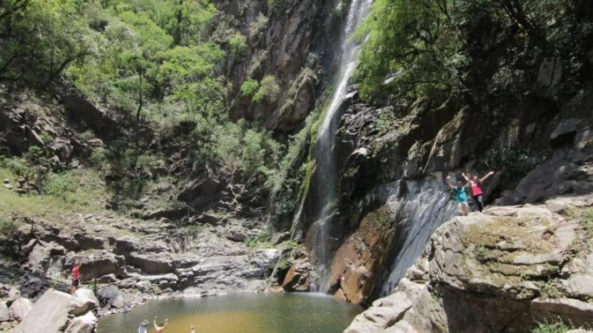
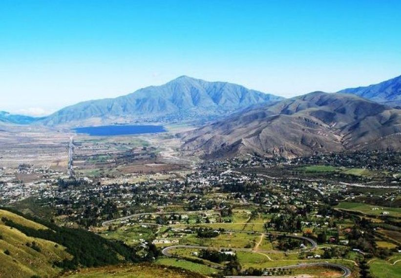
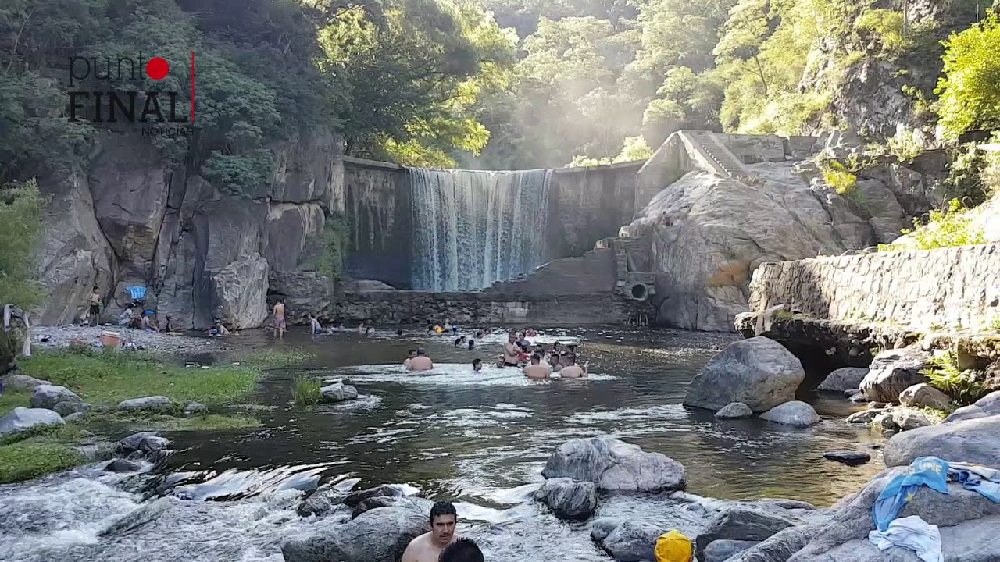

MI PRESENTACION
Bienvenidos
Mi nombre es Angel Juarez y soy de la provincia de Tucuman. En el pueblo donde vivo no tengo un lugar turisticos que puedas visitar, sin embargo, en Tucuman hay difirentes lugares donde puedes pasar el dia. Aqui te estaré presentando los 3 mejores lugares que me gusta visitar en mi tiempo libre.
Cascada de los Pizarros
Tafi del Valle
Rumi Punco
Cascada ubicada al sur de la capital, cerca del poblado de la Cocha, donde despues de una hora de caminata podremos disfrutal del paisaje y las aguas cristalina que se precipitan desde 80 metros de altura.
Uno de los destinos mas visitados por los tucumanos y por los turistas extranjeros.
Ubicada tambien en el sur Tucumano.
